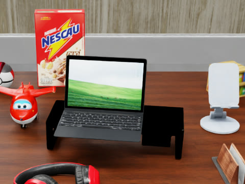
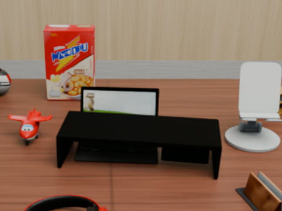
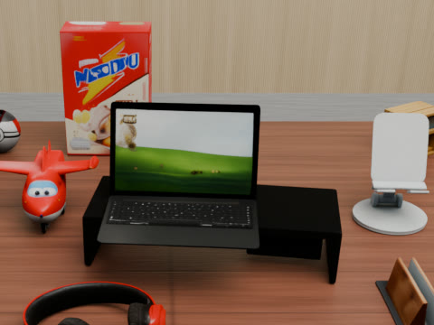
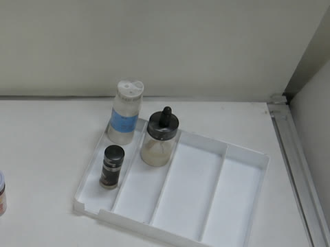
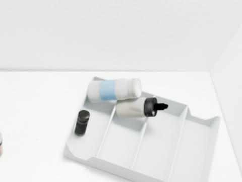
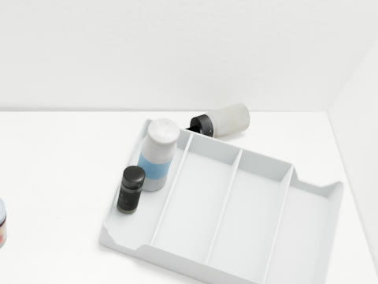

Refinement examples for Reviewer GrF1
Question: Which failures arise during refinement, and how does the loop handle them?
Move handles most corrections; every candidate is simulated, and physically unstable ones are rejected. When Move cannot express a fix, the agent writes a code edit, which is also simulated and kept only after the agent compares the settled result with the photo. Example 1 succeeds; Example 2 shows a limitation.
Example 1 (success): placing a laptop on its stand



- Move (resize): rejected by physics. The enlarged laptop tips over in simulation (73° from upright), so the change is reverted.
- Code edit: the agent enlarges the laptop and places it on the stand. After settling, it matches the photo better, so the agent keeps it.
- A Move and a second code edit then refine its position and size.
Example 2 (limitation): standing two bottles upright



- Move cannot tilt a lying object upright, and a Move that flips the white bottle is rejected by physics because the bottle cannot rest upright.
- Code edit: the agent re-aligns the white bottle's long axis vertically; it stands, and the agent keeps it.
- Dropper bottle: several code edits (one undone) fail to stand it upright among the tray dividers, and it ends lying at the tray's back edge. The scene stays physically valid, but this bottle is misplaced: writing a correct 3D rotation and clearance by hand is hard for current VLMs, whose 3D understanding is limited.